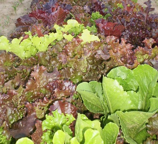
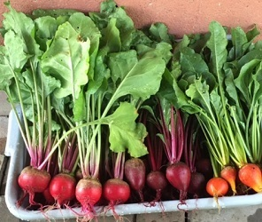

Katt Paradise Farm is a family run farming enterprise. We strive to grow all natural produce over a wide range of vegetables, from many types of greens, roots vegetables and more traditional vegetables like Jersey Tomatoes and Peppers.

Our gourmet greens mix is a specially designed blend based on two years of trial research to make your salad mix stand out from the crowd. Selected varieties yield darker reds and greens even under low-light conditions. Ruffled edges and unique leaf shapes provide loft, interesting texture, good shelf life, and fancy appearance. Includes Green Oakleaf, Red Oakleaf, Green Romaine, Red Romaine, Lollo Rossa, and Redleaf lettuces.
We grow a wide range of tomatoes, all natually grow at our farm in New Jersey. Our Jersey tomatoes range from beefsteak, cherry tomatoes and salad tomatoes among others.

We grown a wide variety of root vegetables, from beets, carrots to radishes. Our beeets are naturally grown and the candy cane beets are a local favorite.